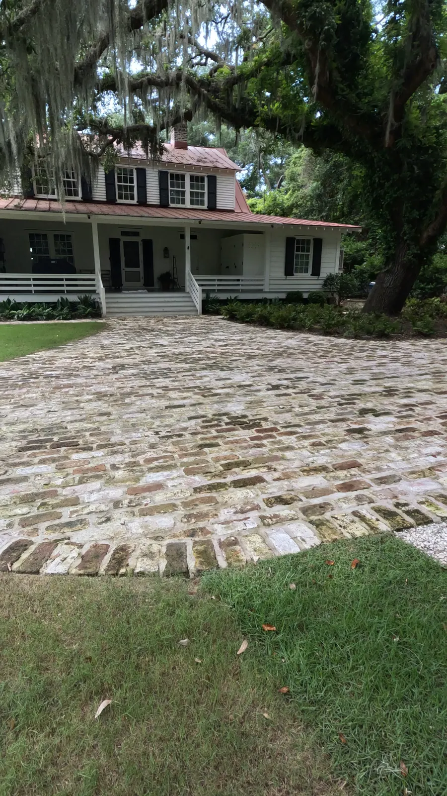
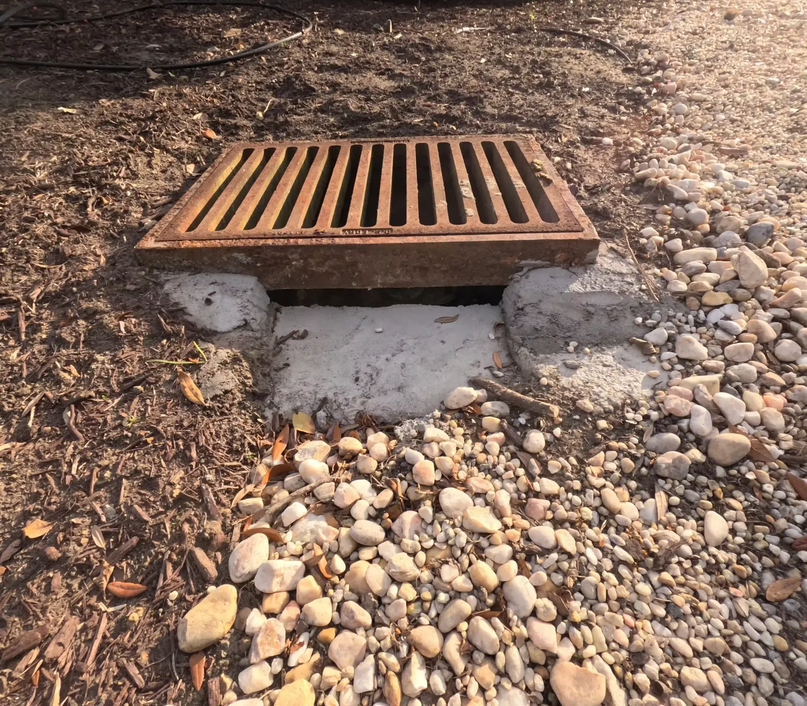

There is no honest price per foot for a French drain, because two drains the same length can be very different jobs. Drainage and grading are quoted after walking the property, because the cost depends entirely on what is causing the water. What we can tell you is what moves the price, how long the work takes, and where the water can go.
The Four Things That Set the Price
- Length. More drain means more trench, more pipe and more time.
- Where the water is going. A French drain is only as good as the place it empties, and the outlet decides how far the pipe has to run.
- Bushes and trees in the way. A trench across open lawn is one job. Working it around shrubs, beds and tree roots is a slower one.
- Putting the landscaping back. Once the drain is in, the sod, planting and any hardscape it crossed are put back so the yard looks like nothing happened.

Where the Water Can Go
Water from a drain cannot just be let out at the edge of the yard, and we do not drain it into a neighbor’s yard. Most of the time it goes to one of two places:
- a drain basin in a drainage easement, a strip of ground set aside for drainage;
- the storm drains on the road.
On a waterfront property it can be sent out past the sea wall or the riprap. That is what we did on a historic brick driveway in Awendaw. The grade did not drain, and with the height of the house and an established lawn there was no changing it, so we added drain basins, piped off the gutters and sent the water out past the owners’ riprap wall.
Finding the outlet comes first, and it is one of the reasons we walk the property before quoting.
How Long It Takes
A French drain is typically a one- to two-day job. It takes longer when there is a lot of pipe to run.
You May Not Need a French Drain at All
A French drain is perforated pipe in gravel. We wrap ours in filter fabric so soil cannot work in and clog it. It collects water that has soaked into the ground and carries it away, which makes it the right tool for ground that stays saturated and the wrong one for plenty of other wet-yard problems. A lot of people misunderstand what a French drain is for, and when to use one.
- Regrading is the ideal fix when it is possible: shape the ground so the water falls away from the house. It is not always possible. It can mean redoing landscaping you want to keep, tree growth can stop water draining away from the house, and some houses sit too low, with nowhere to grade down to. Our grading page covers when it works.
- Water sitting at a low spot after rain is usually a job for a catch basin. Water sheeting across a patio, driveway or pool deck needs a channel drain.
- Roof water can be piped off the gutters underground, to a basin or an outlet; it is one of the most common fixes we make. The Department of Energy’s building guidance says never to tie downspouts into a perforated foundation drain.
Fixing a Wet Yard in Charleston goes through which fix suits which problem, and the ways French drains get misused.

Two Drainage Jobs
James Island. At one house the storm drains had all collapsed and filled with dirt, and the pipe behind them was clogged. We cleaned it all out, rebuilt the basins and piped the gutters into them.
Summerville. Water was running under the house because, over the years, the trees had changed the grade so it sloped toward the house. We regraded the yard so the water falls away, then laid new sod.
Getting a Real Number
A real price needs someone to look at the yard: where the water comes from, where it collects, and where it can go. Doug and Zach Cramer look at it themselves, in person. The consultation at your home is free around Charleston, Mount Pleasant and Summerville. For Kiawah, Seabrook, Wadmalaw and Awendaw, or anywhere else more than an hour from Charleston or Summerville, there is a charge for the proposal trip. It comes off the price if you go ahead with the build, and it is not refundable if you do not.
See our drainage services, get in touch, or call or text Doug at (843) 614-9773.
Frequently Asked Questions
How much does a French drain cost?
It depends on four things: how long the drain is, where the water is being drained to, the bushes and trees in the way, and putting the landscaping back afterwards. Drainage is quoted after walking the property, because the cost depends entirely on what is causing the water.
How long does it take to install a French drain?
It is typically a one- to two-day job. It takes longer when there is a lot of pipe to run.
Where does the water from a French drain go?
Not into a neighbor’s yard; we do not drain water there. Most of the time it goes to a drain basin in a drainage easement or to the storm drains on the road. On a waterfront property it can go out past the sea wall or riprap.
Do I need a French drain?
Not always. Regrading is the ideal fix when it is possible. Water pooling at a low spot usually needs a catch basin, and roof water can be piped off the gutters to a basin or an outlet. A French drain is for ground that stays saturated.
Planning a Project of Your Own?
See everything we design and build, or get in touch to talk through your ideas with Doug and Zach.